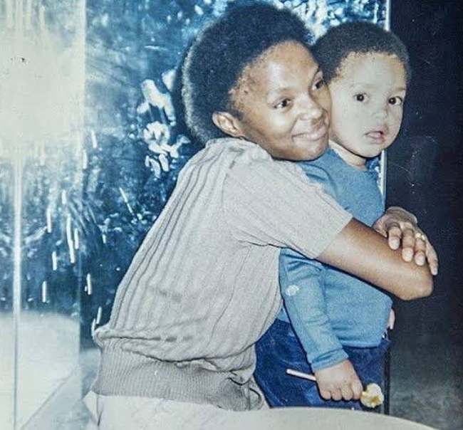
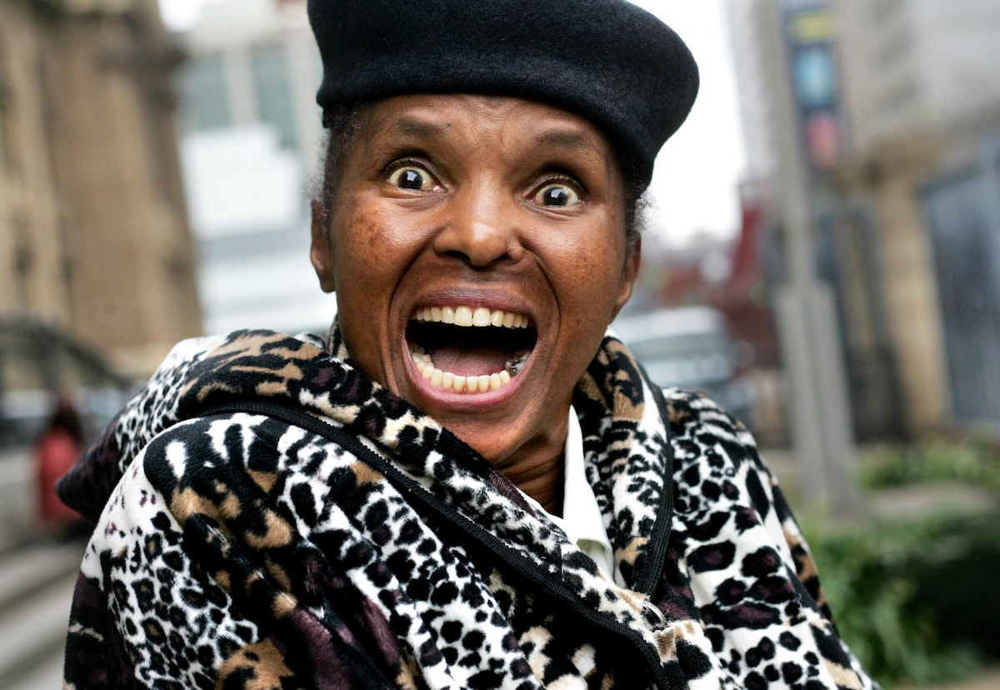

"...The traditional man wants a woman to be
subservient, but he never falls in love with subservient women. He’s attracted to independent women.
“He’s like an exotic bird collector,” she said. “He only wants a woman who is free because his dream is to put her in a cage..."
"Marriage is sacred,God's Union,".
How many times have you heard the phrase being mentioned? Casually, like it's a rule of life.
Sometimes I wonder, Who is to
blame for a failed marriage? Why does a woman always go through a lot?
I really admire Trevor's mom, Patricia Nombuyiselo. She "mocked" the system. The book born a crime really brings out what women go through in the society.
From the very beginning of the book we can see how women are expected to act. How their duty is to wait on their men.
In the book, Trevor mentions something that gets me thinking a lot. "As a nation we recognize the power of women but in the
home they were expected to submit and obey". That makes absolutely no sense, it's like the word "queue"(Story for another day) but that is the reality we live in.
Take a look at Trevor's uncle Dinky, Who for some reason thinks beating up his wife makes him more manly.
I mean why are women subjected to narcissistic men.
When Abel was dating Patricia, never would she have thought that the guy she loved and introduced her son to would one day
pull the trigger on her. And why? Because he could not deal with his own issues and thought that exercising his power on
a strong independent woman would make him feel somehow better. And this is where the problem stems from. I strongly believe that it has something to do
with power. Patricia was like a ship that sailed wherever the wind took her. A free spirit. Bounded by nothing
and nobody. She had so much power within herself, power Abel didn't possess. And he craved control.
That is why we see Trevor mentioning that his mom started losing her sense of independence when she was with Abel.
Which brings us to our next question? Do you think love makes us powerless? Does falling in love make you surrender your power to
your lover?
Do I blame the society for making Abel think that he had to exercise his power to prove his masculinity? No.
We are solely responsible for our own actions.
Do I blame Patricia for being involved with him? No.
She was a victim who never played victim.

Trevor Noah's Born A Crime is undoubtedly the most hillarious book I have ever read (Not that I have read that many books).
Trevor tries to find humor in every situation he is in, making the situation seem lighter . A trait I believe
he got from his mom, Patricia. Trevor tries to address real life problems. An example of this is when he tries to describe the problems
that polygamous families face. He describes the rivalry in the families as "Game of Thrones but with poor people". And this is something that still goes on even today where the
the families, especially if they dont get along, can't wait for each other to die. Says a lot about us as humans don't you think?
Another instance is when he asks his Mom to buy him Adidas sneakers but insead she brings him "Knock off brand abidas". When he brings up the
the topic of the sneakers being fake because of an extra stripe, she bluntly tells him That he should be
grateful he gets an extra one. Typical African Mom answers.
There is also this one time where to save on money, his mom buys him clothes thrice his size
so that he could grow into them but that's when he stops growing. He calls it "Murphy's law". And I have never related
to anyone as much.
Trevor also uses humor to make friends in school. He belonged nowhere and everywhere at the same time.
It did not get him girls but he still got to hang out with them. Still counts, right? he also uses humor to
cope with his mom's shooting.
Trevor uses humor to address poverty,racism,lonliness etc. Through the book, I have learnt to appreciate the importance
of humor. How laughing your way out of a problem will change your outlook on the problem.
There is beauty in laughter. Not just any kind, Genuine laughter..
